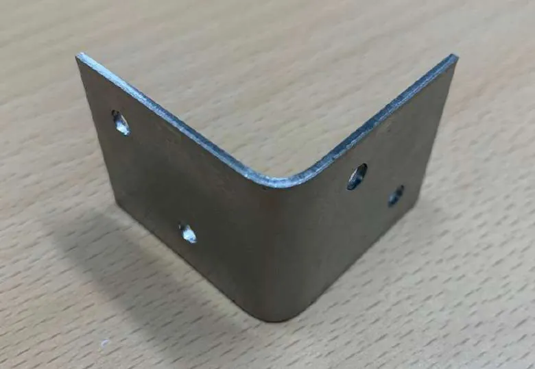
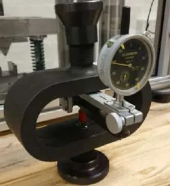
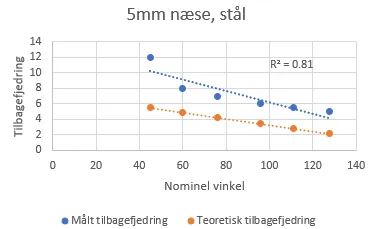
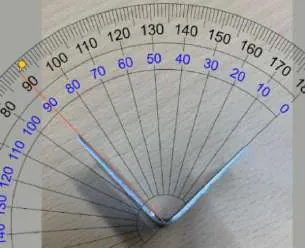
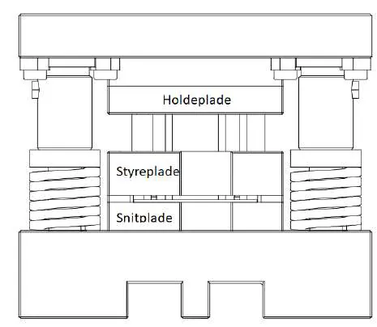
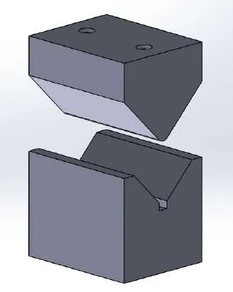

← Alle projekterArk 08 af 08
Kursus 41787 Produktionsteknologi · DTU · hold på 4
Fremstilling af vinkelbeslag og kalibrering af presse
Fremstilling af et vinkelbeslag i stål som på et værksted: lok hullerne, buk beslaget, og sammenhold pressens kræfter med teorien.
- Sammenhæng
- Kursus 41787, DTU
- Hold
- 4 personer
- Min rolle
- Kalibrering, analyse af lokning og bukning, svejsning
- Værktøjer
- Servopresse, kalibreringsring, SolidWorks
- −6.8 %
- fejl i pressens vejeceller fundet ved kalibrering
- 0–98 kN
- kalibreret område
- 2
- materialer lokket: rustfrit stål, messing
Hvad vi gjorde
- Lavede et lokkeværktøj og et bukkeværktøj til beslaget, konstrueret i SolidWorks.
- Kalibrerede servopressens kraftmåling mod en certificeret kalibreringsring fra 0 til ca. 98 kN. Summen af pressens vejeceller viste 6,8 % under den faktiske kraft.
- Beregnede den nødvendige kraft til at lokke de fire huller i rustfrit stål og messing og sammenlignede den med de målte kraft-slaglængde-kurver.
- Beregnede bukkekraften og den forventede tilbagefjedring og målte tilbagefjedringen ved en række nominelle bukkevinkler i begge materialer.
- Beskrev svejsemetoden til det færdige beslag.


Min del
Mine kapitler i holdet på fire
- Beskrivelse af pressen og kraftkalibrering.
- Beregning af lokkekraft og dataanalyse.
- Bukkekraft og tilbagefjedring.
- Svejsemetode og konklusionen.









